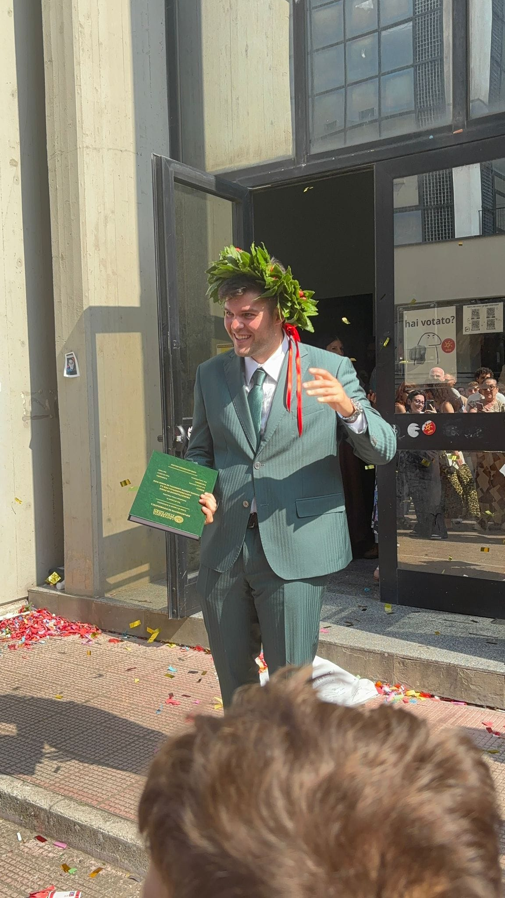

×

Titolo
Testo descrittivo qui...
Sviluppatore versatile e mente creativa. Unisco competenze in Cybersecurity e Intelligenza Artificiale con un forte spirito di squadra. Amo trasformare idee innovative in soluzioni concrete, adattandomi rapidamente a ogni nuova sfida per progettare architetture sicure e all'avanguardia.
Dream Big Do Bigger
